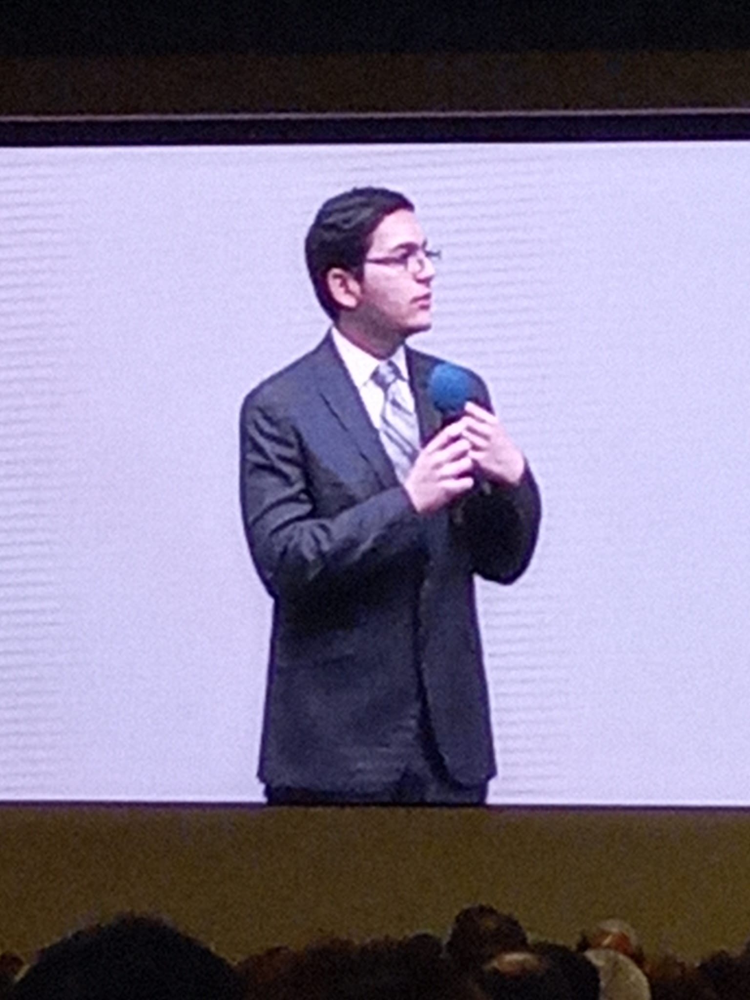

Certifications
I hold multiple programming certifications in Python, CSS, HTML, and have years-long experience in JavaScript, Java, and Lua including completing paid jobs for individuals
I hold multiple programming certifications in Python, CSS, HTML, and have years-long experience in JavaScript, Java, and Lua including completing paid jobs for individuals
I am currently dominant in both English and Spanish, with a steady learning curve in both American Sign Language and Ukranian

Because of my religion, I have given speeches and public readings for years now. The most significant have been in regional assemblies in the Valley with audiences of more than 2,000 people, giving me both the experience and the courage to prepare and deliver impactful presentations
This portfolio was made for a college class, and the activity was one of the most fun I have had doing an assignment. Perhaps because I love coding and showing my creative side, or because I could share my experiences, my favorite part was applying my skills. Making the first two pages took 12 hours, and I spent the last two days brainstorming ideas nonstop. I wanted to show I am unique and capable of so much, so I went all-out, custom-coding animations, colors, effects, writing paragraphs, editing images, and adding quality-of-life features. Hosting it myself on GitHub was challenging but rewarding. It made me doubt myself for a second if I should keep pursuing Political Science to go to law school, seeing how much I enjoyed making projects like this. However, then it just made me strengthen my decision not to major in computer science, as I realized I am already good at it, so why not be a lawyer that's also good at programming? Overall, it rekindled my passion for programming, reinforced my strengths, and reminded me that I can pursue multiple career paths, combining law and programming.